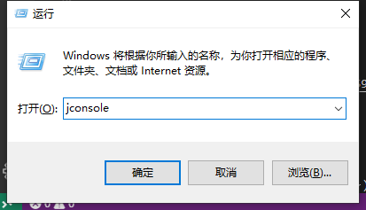
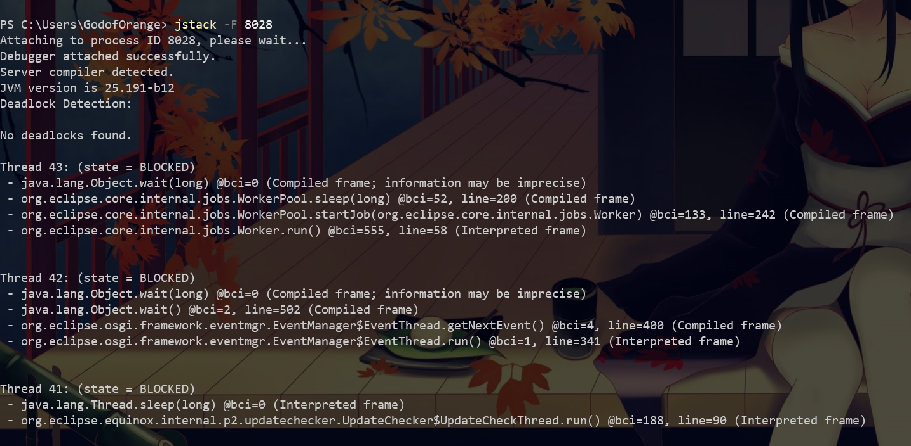

原文出处:本文由博客园博主秃桔子提供。
原文连接:https://www.cnblogs.com/godoforange/p/11569594.html
原文连接:https://www.cnblogs.com/godoforange/p/11569594.html
JConsole(可视化工具)
运行

JConsole内存监控
测试代码
import java.util.ArrayList;
import java.util.List;
public class A {
byte[] b1 = new byte[128*1024];
public static void main(String[] args) {
try {
Thread.sleep(5000);
}catch(Exception e) {
}
System.out.println("start...");
fill(1000);
}
private static void fill(int n) {
List<A> jlist = new ArrayList<A>();
for(int i=0;i<n;i++) {
try {
Thread.sleep(100);
}catch(Exception e) {
jlist.add(new A());
}
}
}
}然后开启jconsole进行连接。

连接后执行一次GC后会发现Eden区域直降一次。
JConsole线程监控。
测试代码：
import java.util.Scanner;
public class A {
byte[] b1 = new byte[128*1024];
public static void main(String[] args) {
Scanner sc = new Scanner(System.in);
sc.next();
new Thread(()->{
while(true) {
}
},"while true线程").start();
new Thread(()->{
synchronized(A.class) {
try {
Thread.sleep(60000000);
}catch(InterruptedException e) {
e.printStackTrace();
}
}
},"wait 线程").start();
}
}这里看到我们有俩个线程。
JPS(JVM Process status)
JPS是使用的频率最高的工具，和linux下的ps命令差不多(把J去掉就是一个ps)。
因为我这里开启了一个eclipse，所以运行结果如下所示：
如果打开任务管理器，就会发现这里的11612就是我们的pid
因此JPS能够查看：本地虚拟机唯一ID（lvmid local virtual machine id）
测试代码：
import java.util.Scanner;
public class A {
public static void main(String[] args) {
Scanner sc = new Scanner(System.in);
sc.next();
}
}使用jps -l 查看主类
jps -l使用jps -m 查看运行时的参数
jps -m使用jps -v 查看虚拟机参数
jps -v(上次写的程序还留着参数，所以看起来会有很多)
使用mlv就能查看所有参数。
jps -mlvJstat(JVM state)
能看到类加载，内存，垃圾收集。
jstat -gcutil能查指定id的GC
看这个就已经蒙蔽了，所以我们来看一下官方文档。
看完之后翻译一下：
|参数|作用|
|----|----|
|S0|Survivor空间0的利用率占当前容量的百分比|
|S1|Survivor空间1的利用率占当前容量的百分比|
|E|Eden区域。。。|
|O|老年代|
等等
jstat -gcutil 8082 1000每隔1000ms导出一次gc
元空间：本质和永久代类似，都是对JVM规范中方法区的实现。不过元空间与永久代的最大区别在于：元空间并不在虚拟机中，而是使用本地内存。因此，默认情况下，元空间的大小仅受本地内存限制。
jinfo
实时查看和调整虚拟机的各种参数。
jinfo -flag UseG1GC 8082我们可以看到eclipse使用的就是G1收集器。
还可以动态的去修改JVM参数设置。
jmap
将jvm堆内存dump下来
jmap -dump:format=b,file=C:\Users\GodofOrange\Desktop\a.bin 8082显示堆中的统计信息。
jmap -histo 8028 > a.txtjstack
打印线程信息
jstack -F 8028
打印栈信息
jstack -m 8028